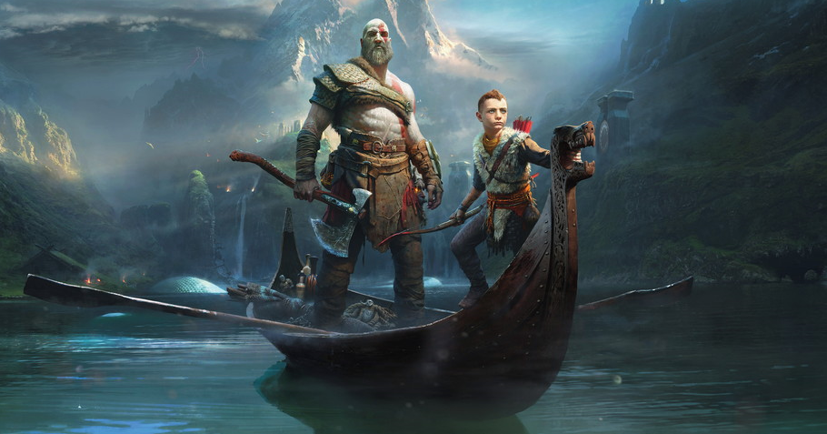

God of War
Introdução
A série God of War, começada em 2005, atraiu todo tipo de jogador, de pessoas que jogam Lol até pessoas normais, por ter jogos muito bem trabalhados e extremamente divertidos de jogar. O mais novo jogo lançado em 2018, marcou o retorno da série em um ambiente novo, na mitologia nórdica.
Além da mudança de senário, o jogo também nos introduz à um novo personagem, Atreus (mais conhecido como "boy" ou "garoto") é o filho de Kratos e uma ótima adição para a jogabilidade.
Jogabilidade
Pode se dizer que a jogabilidade de God of War é incrível. O combate é difícil e necessita de treino para se acostumar, mas quando se acostuma você consegue destruir qualquer tipo de inimigo que apareça. O filho de Kratos também é uma ótima adição à jogabilidade, usando seu arco para atravessar obstáculos e auxiliar Kratos nas lutas (não dá muito dano mas ajuda mesmo assim. Boa garoto).

Gráficos
Não tem muito o que se dizer... Os gráficos são simplesmente incríveis e dignos de um jogo da série God of War.

Opinião do desbravador
"Se você jogou e não gostou, você está errado."
-Rubem Muzzi